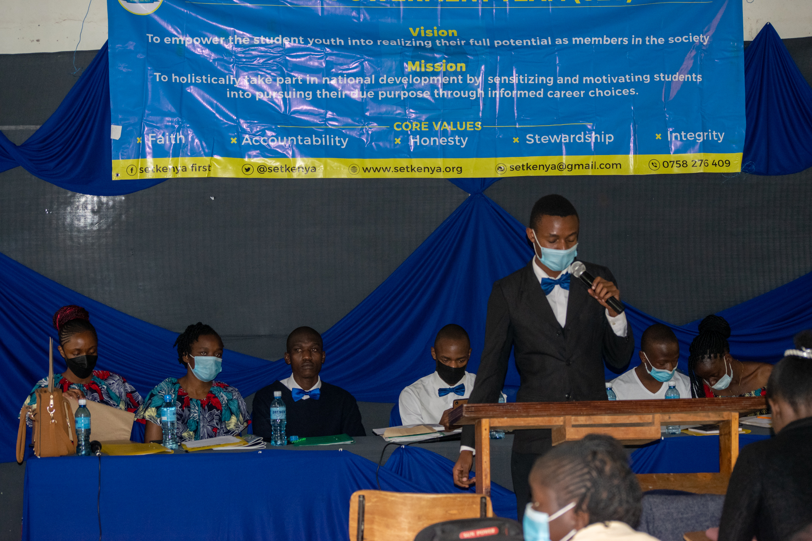

August, 2021
The Annual General meeting 2021 was a great success. The outgone team, chaired by Wanjala Hezron,
handed over the leadership mantle to a new team of executives which will be led by Osapir Ruth as the
chairlady. The new team will focus on re-inventing and re-discovering student Mentorship in the country
alongside the Covid-19 pandemic.
No new Ammendments to the constitution were proposed by the members present. See here for the full Reports
presented during the AGM. Click here to view the photo Album.
Publicity Docket.
Student Empowerment Team, Kenya.